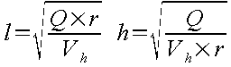

Voir exemple : Les Bassins de décantation
L'implantation d'un bassin de dessablement ou de décantation sur un réseau d'assainissement peut viser des objectifs divers :
faciliter le curage sur des réseaux par implantation de chambres de récupération des dépôts,
protéger des points singuliers du réseau (station de pompage, siphon, collecteur de faible pente,…),
protéger le milieu naturel en assurant la décantation des particules.
Faciliter l'accès pour effectuer le curage,
Déterminer les points sensibles,
Contraintes d'encombrement du sous-sol.
Chambres de dessablement longitudinales : c'est le type d'ouvrage implanté, en général, sur les réseaux d'assainissement. Il est constitué d'une fosse rectangulaire à fond plat ou légèrement incliné à contre courant.
Chambres de dessablement à vitesse constante : ce sont des ouvrages conçus pour assurer une vitesse horizontale constante quel que soit le débit transitant dans l'ouvrage.
Dessableurs circulaires : ils fonctionnent sur le principe de la force centrifuge
Dessableurs cloisonnés ou lamellaires qui consistent à introduire des plaques afin de diminuer la longueur du bassin de dessablement pour une efficacité équivalente.
Le principe théorique du calcul conduit à définir les dimensions d'un parallélogramme de longueur L, de largeur l et de hauteur H.
Considérant une vitesse de chute V de la particule, les dimensions de l'ouvrage sont calculées en supposant que la particule prise dans un fluide animé d'une vitesse horizontale constante Vh et entrant dans le décanteur à une hauteur h atteindra le fond de l'ouvrage à une distance L telle que :
Ensuite, connaissant la vitesse horizontale Vh, le rapport l/h (qu'on notera r) et le débit, on peut déterminer la largeur l et la hauteur h :

Les données essentielles sont :
le débit à dessabler,
et la taille limite des particules à piéger.
|
Type |
Diamètre (mm) |
Vitesse de chute (cm/s) |
|---|---|---|
|
Sable grossier |
0,5 |
5,8 |
|
Sable moyen |
0,2 |
1,9 |
|
Sable fin |
0,1 |
0,7 |
|
Silt grossier |
0,05 |
0,19 |
|
Silt moyen |
0,02 |
0,03 |
|
Silt fin |
0,01 |
0,007 |
|
Argile |
0,005 |
0,0018 |
Tableau 2.6. : Exemples de vitesses de chute pour le dessablement
Hypothèses de calcul :
La vitesse du fluide est constante en tout point du bassin
Une particule déposée n'est pas remise en circulation.
La vitesse de chute est constante et prise égale à la vitesse de sédimentation obtenue en eau stagnante.
Défauts induits par ces hypothèses :
Les vitesses de fluide ne sont certainement pas uniformément réparties dans les sections décrites ; on constate notamment un effet de piston dû au jet lui-même de l'eau rentrant dans la chambre qui ne s'atténue réellement que près de la section du décanteur.
D'une façon générale, il existe une structure des vitesses moyennes des particules fluides telle que les courants sont inversés dans certaines zones, dites de recirculation.
Des particules déposées peuvent être remises en suspension de par la présence de macro-turbulences dans le fluide.
L'approximation consistant à estimer que la vitesse de chute est à peu près égale à la vitesse de sédimentation est très grossière. En réalité, cette vitesse de chute est en moyenne inférieure à la vitesse de sédimentation en eau calme.
Pour tenir compte de ces remarques, on introduit un facteur de majoration appelé facteur de majoration de Kalbskopf , par lequel on multiplie la longueur L du bassin pour obtenir la longueur définitive du bassin Lf ; le tableau ci-dessous présente les valeurs de k.